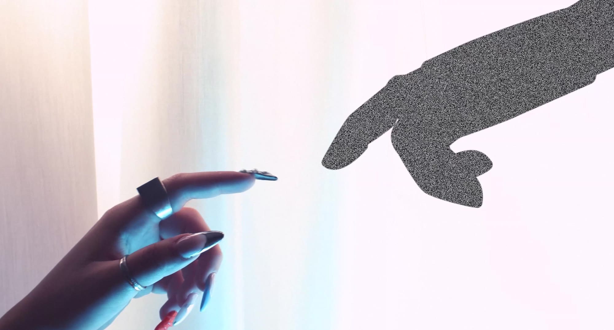
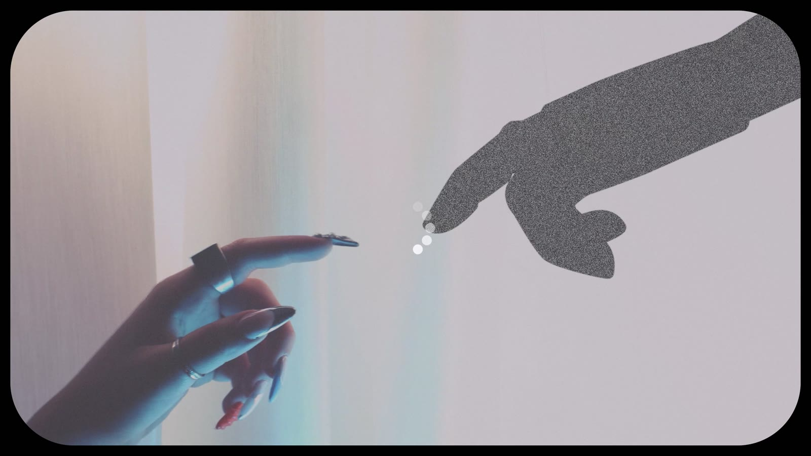
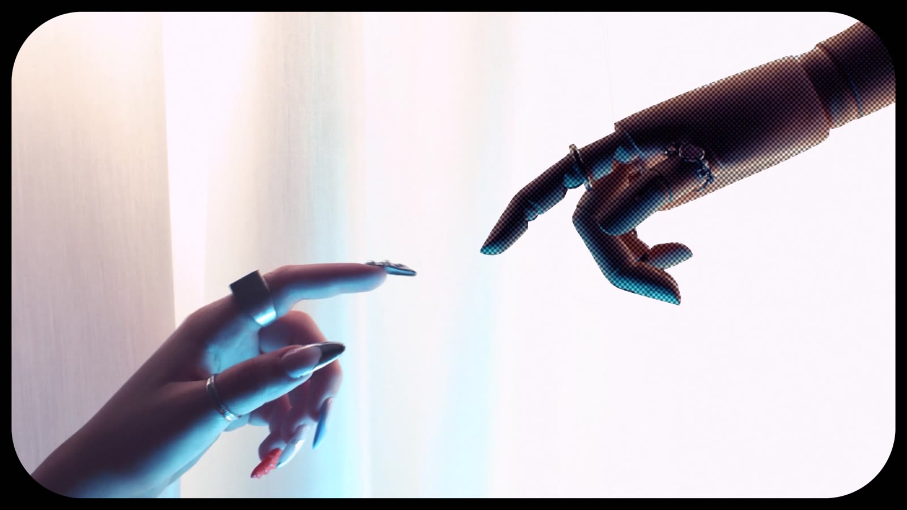
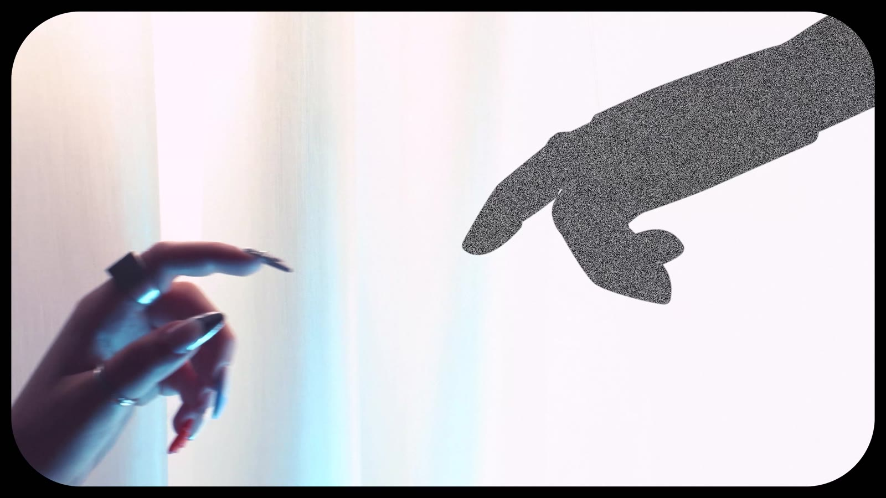
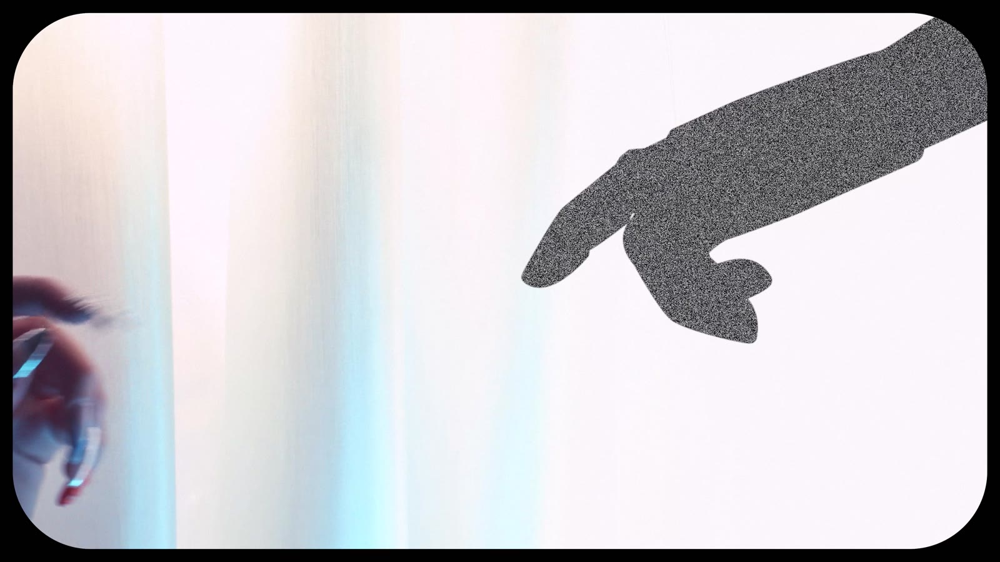

I FEEL A CONNECTION is a short experiment on the relationship between human and machine. A human hand reaches out — the gesture of Michelangelo’s Creation of Adam, restaged for a screen. The hand it reaches for is made of static: it loads, glitches, takes form for a moment, and slips back into noise.
How it was made. The other hand is a real wooden hand, photographed and then reworked frame by frame in Photoshop. I edited the video and made the sound in Premiere Pro.
the video — 0′27″

The space between the two fingertips never closes. Where the spark should be, a loading circle spins.

For a moment the static takes shape — a jointed wooden hand, reworked frame by frame until it flickers between object and signal.

